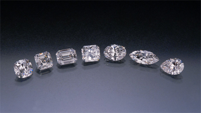
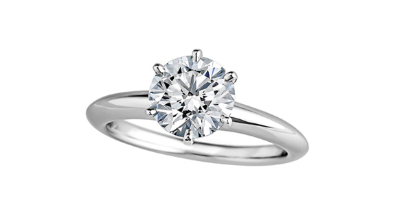
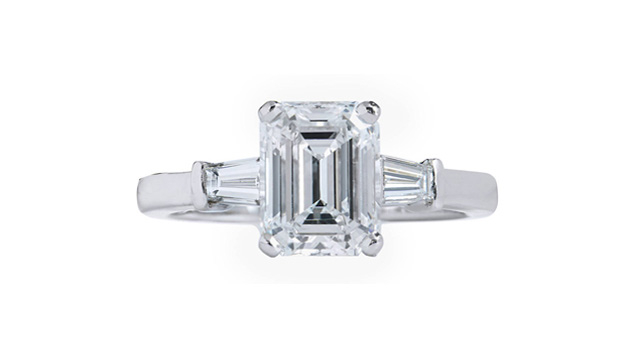
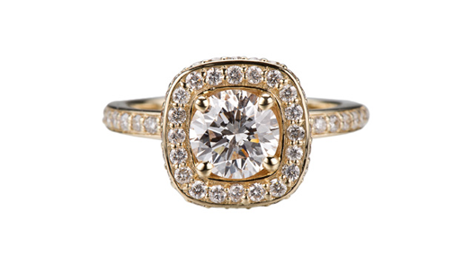
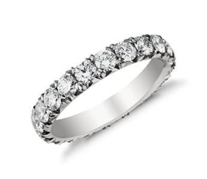

Как выбрать помолвочное кольцо с бриллиантом?
Как выбрать помолвочное кольцо с бриллиантом?
Покупка кольца для помолвки — событие радостное и ответственное. Только представьте: вы достаете из кармана коробочку с кольцом и просите любовь всей своей жизни стать вашей женой. Вы отчаянно хотите, чтобы она сказала «да» и влюбилась в колечко с бриллиантом. Наши советы помогут вам выбрать идеальное украшение, которое точно понравится вашей невесте.
-
Решите, сколько готовы потратить
Вы столкнетесь с огромным выбором, когда дело дойдет до помолвочных колец. Сначала определитесь с бюджетом и сообщите его ювелиру. Так ему будет проще подобрать нужный камень.
Второй параметр после бюджета — характеристики камня. О них вам стоит узнать больше до того, как зайдете в ювелирную мастерскую. Начните с 4C: цвет, чистота, огранка и вес в каратах. Поймите, какой критерий для вас самый важный, а в чём вы готовы пойти на компромисс, чтобы уложиться в бюджет.
-
Оцените предпочтения невесты в украшениях
Обратите внимание на то, какие украшения она носит. Классические или современные? Из белых металлов или желтого золота? Изящные или массивные? Лаконичные или богато украшенные? Имейте в виду эти моменты, когда будете выбирать кольцо для помолвки. Если вы купите что-то похожее на то, что ей уже нравится, точно не ошибетесь.
-
Узнайте размер кольца
Если девушка носит кольца, возьмите одно на пару минут. Обведите внутренний круг на листе бумаги или вдавите кольцо в кусок мыла для оттиска. Вы также можете надеть кольцо на свой палец и отметить место, где оно село максимально плотно. Эта информация поможет ювелиру определить примерный размер кольца вашей невесты.
Если она не носит колец, можно сообщить ювелиру вес и рост девушки. Средний размер колец 16,5-17 соответствует росту 165 см и весу 60-63 кг. Невеста более стройная? Тогда ее размер находится в диапазоне 15-16. Более высокая и купная в кости? Смотрите на кольца размером 17-18. Лучше купить кольцо немного больше: уменьшить размер проще, чем увеличить.
-
Подумайте, какие формы ей нравятся
Возможно, девушка упростила задачу и высказала мнение по поводу помолвочного кольца подруги. Если нет, учтите все нюансы при выборе формы бриллианта.
Помните, что невеста будет носить кольцо каждый день вашей супружеской жизни. Камень должен сочетаться со всем от джинсов до вечернего наряда. Самая безопасная, классическая форма бриллианта — круглая, овальная или квадратная. Такие камни хорошо смотрятся на одной руке рядом с другими огранками. А вот «грушу» и «сердце» сочетать гораздо сложнее.
Предпочтение в форме может быть отражено и в других аспектах. Например, если девушка предпочитает чистые, прямые линии в мебели, вполне вероятно, что она хорошо отреагирует на ту же эстетику в прямоугольных или квадратных формах. Если склоняется к классике, бриллиант круглой формы придется по душе. Любит всё необычное, не как у всех? Присмотритесь к треугольной или маркизной формам.
-
Определитесь с дизайном
Дизайн помолвочного кольца должен учитывать образ жизни девушки. Невеста активная, любит путешествия, прогулки — выбирайте простой дизайн с минимальным декором и прочным креплением камней, чтобы кольцо не цеплялось и не мешало владелице.
Девушка ведет светский, гламурный образ жизни — ищите эффектное кольцо со сложной детализацией.
-

На фото слева направо: огранка подушки, огранка Ашера, огранка изумруда, огранка принцессы, овальная форма, форма маркизы, грушевидная форма. Любезно предоставлено бриллиантами Лазаря Каплана.
стили помолвочных колец
-

Кольцо-солитер.
Уже много веков этот дизайн остается самым популярным. Классическое кольцо-солитер отличает один камень, обычно это бриллиант. Огранка может быть любой: круглая, изумруд, Ашер, груша, кушон, сердце.
Существует два варианта крепления: оправа Бензеля или оправа с зубцами. Первый вариант считается более надежным, хотя камень при таком креплении улавливает меньше света, соответственно, меньше блестит. Зубцы, наоборот, позволяют бриллианту сверкать во всем своем великолепии.
-

Кольцо с боковыми камнями.
Как правило, два боковых камня чуть меньше центрального. Они подчеркивают основной бриллиант и повышают вес в каратах, при этом нет необходимости использовать большой камень.
-

Кольцо в стиле гало (halo).
Еще один классический дизайн помолвочного кольца, когда центральный камень окружен россыпью более мелких бриллиантов. Такой несколько винтажный стиль придает украшению вид семейной реликвии, которая передавалась из поколения в поколение. Блестящий ореол добавляет размер и вес основному камню, который может быть совершенно любой формы.
-

Бриллиантовое паве.
Еще один пример стильного дизайна поволвочного кольца — бриллиантовое паве. Это особый способ крепления камней, когда метал совсем не виден. Благодаря этому из мелких камней получается роскошное ювелирное украшение.
Найдите ювелира
Пожалуй, один из самых важных пунктов при выборе кольца для помолвки. Хороший ювелир расскажет вам о характеристиках 4C, ответит на все вопросы и поможет заказать на алмазной бирже идеальный камень под ваш бюджет.
Важно, чтобы мастер предоставил сертификаты GIA, SSEF, GRS или Gubelin, которые подтвердят качество камня и стоимость. Также в ювелирной мастерской вы сможете увидеть примеры работ, отзывы реальных клиентов.
Ювелирный дом «На Фрунзенской» является официальным брокером мировой алмазной биржи RapNet. Мы сотрудничаем напрямую с биржами Израиля, Гон Конга и Бельгии. Привезем для вас бриллианты, сапфиры, изумруды, рубины на любой бюджет.
Наши мастера — лучшие. И это факт. Они приехали в Москву, много лет проработав в Израиле. Часовой бренд № 1 в мире Richard Mille, ювелирные дома Сartier, Jacob & Co инкрустируют самые дорогие изделия только там. Именно в Рамат-Гане работают самые талантливые ювелиры. А теперь и в доме на «Фрунзенской».
Выбрать помолвочное кольцо гораздо проще, если вам помогает опытный ювелир. Только представьте ее эмоции, когда вы наденете на палец то самое идеальное кольцо: восторг, удивление, любовь, счастье. Думайте об этом, а технические моменты доверьте профессионалам.
Комсомольский проспект дом 42 строение 1
Режим работы: 09:00-21:00 без выходных.
Для согласования более позднего времени визита,
пожалуйста, записывайтесь заранее.